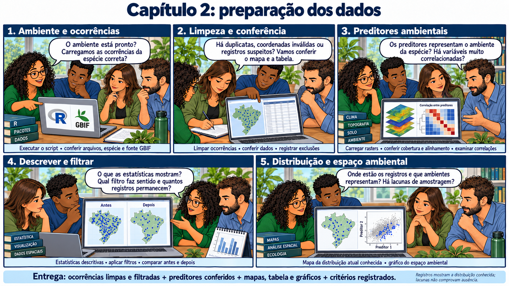

CAPÍTULO 06 · D · Data
Limpar sem apagar a história dos dados
Qualidade, detectabilidade e viés de amostragem exigem decisões diferentes.
Base no curso: slides 153–159; 179–191; 254.
O mapa mostra vários registros na mesma coordenada. Uma pesquisadora propõe excluí-los de imediato; outra pede a ficha de origem. Parte é duplicação, parte é uma localidade legítima e parte pode ser um centroide. O grupo passa a revisar os alertas antes de interpretar os pontos.

A limpeza procura erros e incompatibilidades: coordenadas ausentes, valores fora dos limites, troca entre latitude e longitude, registros incompatíveis com a geografia e duplicações. Ferramentas de triagem identificam candidatos a problema. Identificação taxonômica e procedência continuam exigindo exame crítico.
flags <- bdc_coordinates_empty(
presence.points,
lat = "decimalLatitude",
lon = "decimalLongitude"
)
flags <- bdc_summary_col(data = flags)
presence.points <- presence.points[flags$.summary, ]
report.occ.df <- report.occ.df %>%
add_row(Occurrences = "Cleaning occurrence dataset",
Total = nrow(presence.points),
Obs = "Removed: occurrences without coordinates")
# Remove ocorrências com coordenadas fora dos limites
flags <- NULL
flags <- bdc_coordinates_outOfRange(
presence.points,
lat = "decimalLatitude",
lon = "decimalLongitude"
)
flags <- bdc_summary_col(data = flags)
presence.points <- presence.points[flags$.summary, ]
report.occ.df <- report.occ.df %>%
add_row(Occurrences = "Cleaning occurrence dataset",
Total = nrow(presence.points),
Obs = "Removed: occurrences out of range")
# Detalhe numérico mínimo: 2 casas decimais (~1,11 km em latitude).Duas casas decimais indicam detalhe numérico, não acurácia. Uma coordenada pode ter muitos dígitos e representar o centro de um município. Compare incerteza posicional, escala da pergunta e tamanho da célula ambiental. A ausência de informação sobre precisão deve ser registrada, sem assumir que a coordenada é exata.
Ausência de registro e esforço de observação
Uma região com poucos registros pode ter pouca ocorrência, pouco esforço, baixa detectabilidade ou poucas instituições publicando dados. A filtragem espacial reduz redundância, mas não reconstrói o esforço desconhecido e não garante que todos os ambientes estejam representados.
# Filtro geográfico por resolução dos preditores
# Mantém apenas um registro por pixel (mais simples)
presence.points.clean.filtered <- occfilt_geo(
data = presence.points.model,
x = "decimalLongitude",
y = "decimalLatitude",
env_layer = c(predictors, predictors.other, predictors.soil),
method = c("cellsize", factor = 1),
prj = crs(predictors)
)A equipe preserva presence.points.clean.no.filter para delinear e diagnosticar a área de calibração e usa o conjunto filtrado na modelagem. Essa separação mantém a informação geográfica dos pontos limpos sem multiplicar registros redundantes no ajuste. O inventário deve permitir voltar de cada conjunto ao bruto.
Como avaliar um refinamento
Compare quantos pontos foram retirados, quais ambientes deixaram de ser representados e que regiões perderam informação. Um filtro mais forte pode reduzir dependência e simultaneamente eliminar ambientes raros. Não há distância universal que resolva o viés de todas as espécies.
Exercício
Explique por que “número de pontos” e “quantidade de informação” podem divergir. Que comparação faria antes de escolher entre um filtro por pixel e um filtro por distância?